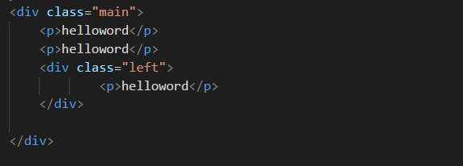
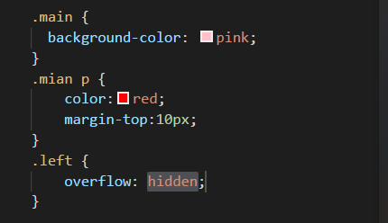
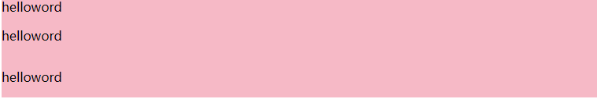
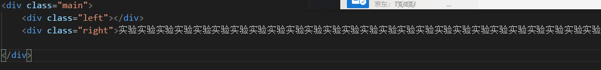
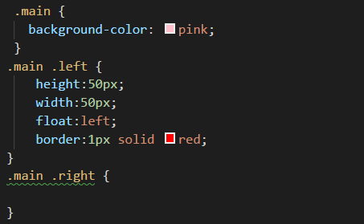
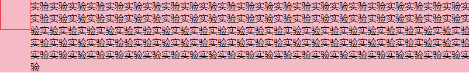

##什么是BFC(Block Fromatting Context)
在一个Web页面的CSS渲染中，块级格式化上下文 (Block Fromatting Context)是按照块级盒子布局的。W3C对BFC的定义如下：
浮动元素和绝对定位元素，非块级盒子的块级容器（例如 inline-blocks, table-cells, 和 table-captions），以及overflow值不为“visiable”的块级盒子，都会为他们的内容创建新的BFC（块级格式上下文）。
为了便于理解举一个例子来进行阐述,一个HTML元素要创建BFC，则满足下列的任意一个或多个条件即可：
1、float的值不是none。
2、position的值不是static或者relative。
3、display的值是inline-block、table-cell、flex、table-caption或者inline-flex
4、overflow的值不是visible
BFC是一个独立的布局环境，其中的元素布局是不受外界的影响，并且在一个BFC中，块盒与行盒（行盒由一行中所有的内联元素所组成）都会垂直的沿着其父元素的边框排列。
怎么创建BFC（只要不满足上面条件的任一一种都可以）
在类main中添加类似 overflow: scroll，overflow: hidden，display: flex，float: left，或 display: table 的规则来显示创建BFC。虽然添加上述的任意一条都能创建BFC，但会有一些副作用：
1、display: table 可能引发响应性问题
2、overflow: scroll 可能产生多余的滚动条
3、float: left 将把元素移至左侧，并被其他元素环绕
4、overflow: hidden 将裁切溢出元素
因而无论什么时候需要创建BFC，都要基于自身的需要来考虑。
外边距折叠的问题：
在CSS当中，相邻的两个盒子（可能是兄弟关系也可能是祖先关系）的外边距可以结合成一个单独的外边距。这种合并外边距的方式被称为折叠，并且因而所结合成的外边距称为折叠外边距。折叠的结果按照如下规则计算：
1、两个相邻的外边距都是正数时，折叠结果是它们两者之间较大的值。
2、两个相邻的外边距都是负数时，折叠结果是两者绝对值的较大值。
3、两个外边距一正一负时，折叠结果是两者的相加的和。
BFC可以做什么呢
利用BFC避免外边距折叠
下面的截图代码 如果三个P标签都在main容器中 他们的margin值都是10px;给第三个p创建BFC会避免外边距的折叠



BFC包含浮动:
浮动元素是会脱离文档流的(绝对定位元素会脱离文档流)。如果一个没有高度或者height是auto的容器的子元素是浮动元素，则该容器的高度是不会被撑开的.BFC能包含浮动，也能解决容器高度不会被撑开的问题。
使用BFC避免文字环绕：
如下例代码所示


解决上面的文字环绕的问题只需要给right的盒子创建一个BFC就可以

在多列布局中使用BFC：
如果我们创建一个占满整个容器宽度的多列布局，在某些浏览器中最后一列有时候会掉到下一行。这可能是因为浏览器四舍五入了列宽从而所有列的总宽度会超出容器。但如果我们在多列布局中的最后一列里创建一个新的BFC，它将总是占据其他列先占位完毕后剩下的空间。